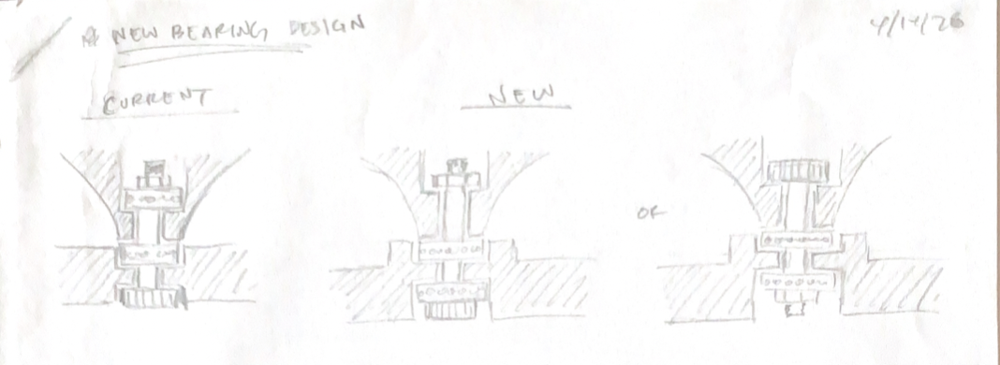
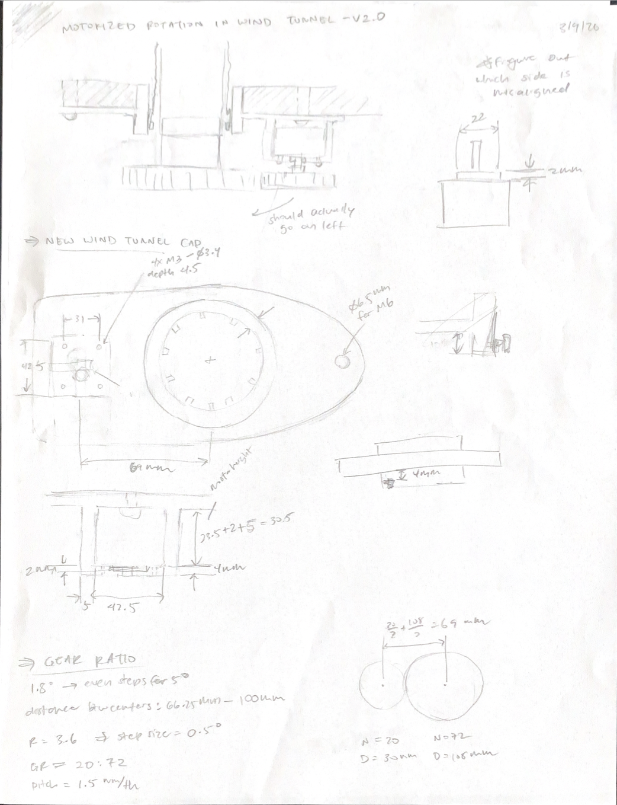
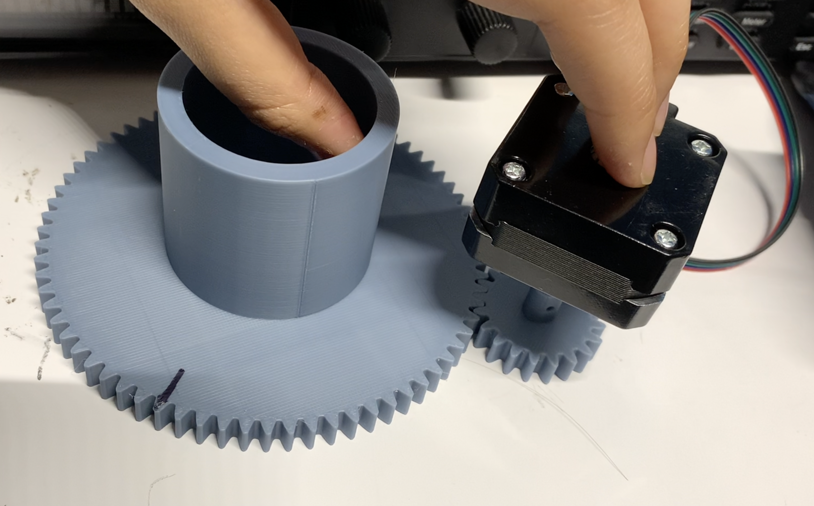
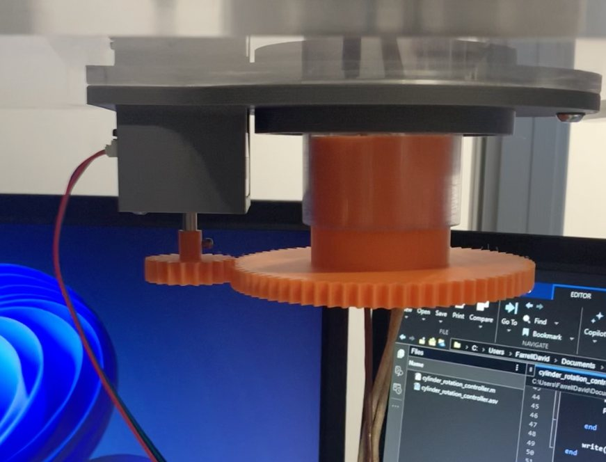

Problem Statement
Build a fixture to rotate a cylinder in a wind tunnel test section from 0° to 180° in 5° increments.
Ideas and Prototyping

Bearing design sketches

Motor attachment to wind tunnel
1. New bearing design: Switched around the layering to ensure that the nut would not loosen when cylinder was rotating.
2. Motor attachment: Made the mount compatible with the wind tunnel opening. Calculated the gear ratio to reduce speed and fixed motor at the appropriate distance.
3. Stepper motor control: Wrote MATLAB code and wired electronics to control NEMA 17 stepper motor and integrate into wind tunnel DAQ system.
Challenges
- Gears were not meshing well, but it turned out to be an issue with the bearings that didn't allow the cylinder to rotate smoothly.
- Had issues figuring out the right rates for DAQ data acquisition and sending digital waveform to motor controller.
Results

Checking general rotation amount

Final setup
Rotational fixture complete!